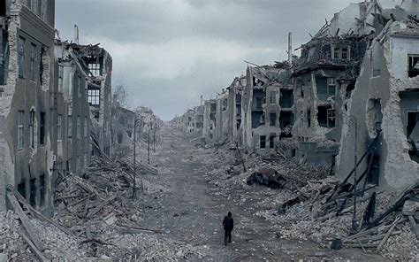

this is a document about the start of ww2, the only jokes will be in the pictures.
Why DID France surrender in WWII
France Surrendered in the Second World war because the German blitzkrieg through Belgium actually worked and France's top Soldiers had been encircled with the British at Dunkirk
leaving only the Untrained reserves to fend off the German war Machine.
Another Reason that France surrendered is because they didn't want their landmarks being destroyed like Poland
where Germany bombed Warsaw into oblivion and all that was left of the Main city was husks of buildings without windows

Warsaw city in the 1940's (Image taken from 'The Pianist' 2002)